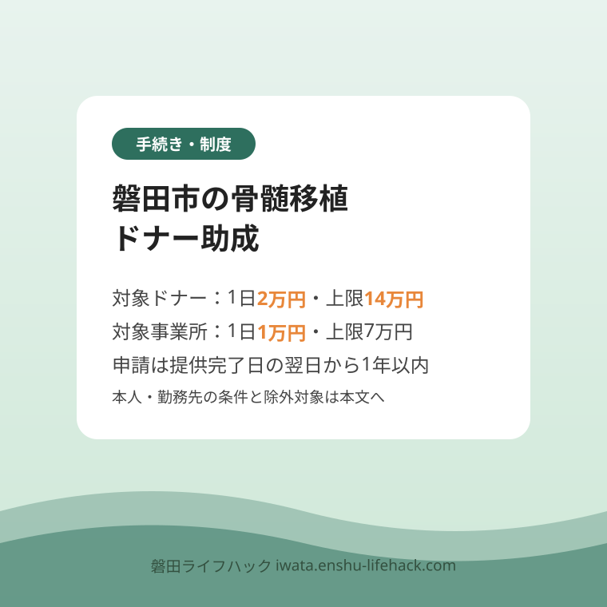

手続き・制度
磐田市の骨髄移植ドナー助成｜ドナーは1日2万円・上限14万円、勤務先の事業所にも1日1万円、申請は提供完了から1年以内

この記事の要点
Q. 磐田市で骨髄等を提供したドナーには、どんな助成がありますか？
A. ドナー本人に、通院・入院・面談1日につき2万円（1回の提供につき7日まで、上限14万円）。ドナーが勤務する事業所にも1日1万円（上限7万円）が交付されます。申請は提供を完了した日の翌日から1年以内に、健康増進課（iプラザ）へ。
骨髄バンクに登録し、適合する患者さんが見つかって、実際に骨髄等を提供する――その決断には、通院や入院で仕事を休む日数が伴います。磐田市には、その負担を金銭面で支える制度があります。「磐田市骨髄移植ドナー支援事業助成」です。公益財団法人日本骨髄バンクが実施する骨髄バンク事業で骨髄等を提供したドナー本人に加えて、ドナーが勤務する事業所にも助成金が交付される、二方向の仕組みになっています。
この記事では、磐田市の公式ページ「骨髄移植ドナー支援事業助成」（ページ番号1007784、2026年1月13日更新）を実際に開いて、対象者・金額・日数の数え方・申請期限・必要書類を一つずつ確認しました。ドナー登録そのものの条件は日本骨髄バンクの案内に委ねられているため、登録の流れではなく「提供した後に受けられる助成」に絞って整理します。
まず結論｜ドナーに1日2万円、事業所に1日1万円
助成の骨格はシンプルです。ドナーには、骨髄等の提供のために通院・入院・面談に要した日数に2万円を掛けた金額が交付されます。上限は14万円です。
ドナーが勤務する事業所にも、同じ日数に1万円を掛けた金額が交付されます。こちらの上限は7万円です。提供のために休んだ従業員を支えた職場側にも目配りする設計になっています。
日数の数え方には上限があり、1回の骨髄等の提供につき7日を限度とします。ドナーの「2万円×7日＝14万円」、事業所の「1万円×7日＝7万円」という上限額は、この7日の限度から素直に導かれる数字です。
申請の期限は、骨髄等の提供を完了した日の翌日から1年以内です。提供が終わってから動き始める制度なので、期限の起点は「提供完了日」である点を押さえておく必要があります。
ドナーの対象要件｜提供日に市内在住・提供完了・市税完納
ドナーとして助成を受けるには、市の定める要件をすべて満たす必要があります。第一に、骨髄等の提供日に磐田市に住所がある方であることです。申請日ではなく「提供日」に市内に住所があるかどうかが基準になります。
第二に、骨髄バンク事業において骨髄等の提供を完了している方であることです。登録しただけ、適合通知が来ただけでは対象にならず、実際に提供を終えたことが条件です。
第三に、他の同様の趣旨の助成金を受けていない方であることです。二重の受給は想定されていません。
第四に、市税を完納している方であることです。市の助成制度でよく見かける要件ですが、この制度でも明記されています。要件は四つとも「すべてを満たす方」とされているため、一つでも欠けると対象から外れます。
事業所の対象要件｜国内の事業所で、国や自治体などは除く
事業所側の要件は二つです。まず、ドナーが勤務する国内の事業所であることです。ただし、国、地方公共団体、独立行政法人、地方独立行政法人、国立大学法人、公立大学法人は除かれます。公的な機関に勤めるドナーの勤務先は、この事業所助成の対象にはなりません。
もう一つは、市税を完納している事業所であることです。ドナー本人の要件と同じく、税の完納が条件に置かれています。
事業所への助成は、ドナーの休みに理解を示した職場への直接の支えです。「ドナー休暇」のような制度がない職場でも、市が日数分を補う形で、従業員の提供を後押しする狙いがあると読めます。

日数の数え方｜通院・入院・面談の合計で、7日が限度
助成の対象になる日数は、「骨髄等の提供のために通院・入院及び面談に要した日数」です。採取のための入院だけでなく、その前後の通院や、骨髄バンクとの面談の日も含まれます。
たとえば通院2日、入院3日、面談1日で合計6日なら、ドナーは2万円×6日で12万円、事業所は1万円×6日で6万円となります。どちらも上限の範囲内です。
逆に、日数が7日を超えても、数えられるのは7日までです。ドナー14万円、事業所7万円が交付の天井になります。
日数の裏付けになるのが、後述する「骨髄バンクが発行した、骨髄等の提供が完了したことを証明する書類」です。申請書の様式にも、通院・入院・面談の日数が確認できる書類を添える形が取られています。提供の過程で受け取る書類は、申請まで手元に残しておくのが安全です。
申請方法｜提供完了の翌日から1年以内に健康増進課（iプラザ）へ
申請先は、磐田市健康増進課（iプラザ）です。骨髄等の提供を完了した日の翌日から1年以内に、書類をそろえて申請します。
ドナーの書類は2点です。骨髄移植ドナー支援事業助成金交付申請書（様式第1号・ドナー用）と、公益財団法人骨髄バンクが発行した、骨髄等の提供が完了したことを証明する書類です。
事業所の書類は4点です。申請書（様式第2号・事業者用）と完了証明の書類に加えて、ドナーとの雇用関係が分かる書類、事業所の所在地が分かる書類が必要です。
申請の後の流れも市のページに明記されています。受付後、市から交付決定通知が郵送され、交付決定通知の後に、指定した口座へ入金されます。申請したらすぐ振り込まれるのではなく、「決定通知→入金」の順である点は、資金計画のうえで知っておきたいところです。

ドナー登録とは別の話｜登録の条件は日本骨髄バンクへ
ここまで読んで「自分も登録したい」と思った方へ、線引きを一つ。市のページは、ドナー登録には条件があるとして、日本骨髄バンクのホームページを見るよう案内しています。年齢や健康状態などの登録条件は、この助成制度のページには書かれていません。
つまり市の役割は「提供した後の経済的な支え」、登録や適合・提供の進行は骨髄バンクの領域、という分担です。登録を考えている方は骨髄バンクの案内から、すでに提供を終えた方は市の助成ページから、それぞれ確認するのが正しい入口になります。
なお、静岡県も県内のドナー助成実施市町の一覧を公表しており、磐田市は健康増進課（電話0538-37-2011）が窓口として掲載されています。市のページで分からない点は、この窓口に確認するのが確実です。
良い点
良い点は3つあります。第一に、ドナー本人だけでなく勤務先の事業所まで助成の対象にしている点です。提供に伴う休みは、本人と職場の双方に負担がかかります。両方に日数分の金額を出す設計は、その現実に沿っています。
第二に、金額の仕組みが分かりやすい点です。「1日2万円（事業所は1万円）×日数、上限は7日分」という一文で、自分のケースの見通しが計算できます。複雑な所得制限や段階区分は置かれていません。
第三に、申請期限が「提供完了の翌日から1年以内」と長めに取られている点です。提供の直後は体調の回復が先に来ます。落ち着いてから書類をそろえられる期間があるのは、使う側にとって実務的な配慮です。
注文したい点
注文したい点もあります。まず、この制度の存在自体が、提供を終えた人の目に届きにくいことです。市のページは「おとなの健康・健診相談」の分類の中にあり、骨髄バンクに登録している市民が、提供の前後に市のページまでたどり着く導線は太くありません。骨髄バンク側の案内と市の助成ページが相互に目立つ形でつながると、申請のし忘れは減るはずです。
また、日数の限度が7日である点も、実態と照らして見直しの余地があると考えます。適合から提供までには、確認検査や面談、採取前後の通院が積み重なります。7日を超える関与が必要になるケースで、上限が実負担に見合っているかは、運用の中で点検してほしいところです。
さらに、事業所助成は「ドナーが勤務する事業所」からの申請が必要です。本人が職場に知らせていない場合や、職場側の手続き負担が重い場合には、制度があっても使われない可能性があります。事業所向けの案内の分かりやすさも、本人の分と同じくらい大切です。
対案・結論
対案として提案したいのは、提供を完了したドナーへ、骨髄バンクの完了証明の発行タイミングに合わせて、市の助成制度を案内する一文を添える連携です。証明書類は申請に必須のものであり、ドナーが必ず目にする接点です。そこに「磐田市在住の方は市の助成（1日2万円・上限14万円、申請は1年以内）があります」と一行あるだけで、制度は「探すもの」から「届くもの」に変わります。
結論として、この制度は金額の派手さではなく、設計の素直さが持ち味です。提供日時点で市内に住み、提供を完了し、市税を完納しているドナーに、日数分をきちんと出す。勤務先にも出す。申請は1年以内。条件に当てはまる方は、証明書類をそろえて健康増進課へ申請してください。
確認する順番
- 提供を完了した日を確認し、申請期限（翌日から1年以内）を手帳に書き込む
- 日本骨髄バンクが発行した「提供が完了したことを証明する書類」が手元にあるかを確認する（通院・入院・面談の日数が分かるもの）
- ドナー用の申請書（様式第1号）を市のページから入手し、日数を数えて金額の見通しを立てる
- 勤務先にも事業所助成（1日1万円・上限7万円）があることを伝え、様式第2号と雇用関係・所在地の書類を職場と分担してそろえる
- 健康増進課（iプラザ、電話0538-37-2011）へ提出し、交付決定通知が届いてから口座入金を確認する
県の一覧でも確認できる｜窓口は健康増進課
この制度は、磐田市だけが手探りで運用しているものではありません。静岡県は「静岡県内で骨髄ドナーに対する助成制度のある市町」という一覧を公表し、県内の実施市町と担当窓口を並べて示しています。その一覧の中で、磐田市の担当は健康増進課、電話番号は0538-37-2011とされています。
県が一覧化していることには意味があります。ドナーは提供先の医療機関が市外・県外になることもあり、「自分の住む市に制度があるか」を探す入口として、県の一覧は市のページより先に目に触れることがあるからです。市のページと県の一覧の双方で同じ窓口が示されているため、問い合わせ先に迷う心配は少ないと言えます。
また、市の申請書様式（様式第1号・第2号）には、申請にあたって市が保有する個人情報の調査や、市税の状況の確認に同意する旨の記載があります。要件にある「市税を完納している方」「市税を完納している事業所」という条件は、申請の段階でこの同意に基づいて確認される仕組みです。滞納がある場合は、申請前に窓口で扱いを確認しておくと、手続きが止まらずに済みます。
提供を終えた直後は、まず体調の回復が優先です。そのうえで、完了証明の書類と通院・入院・面談の日数を手元で整理し、1年の期限のうちに申請する。この制度は、急がせる作りにはなっていません。落ち着いた時期に、順番に進めてください。
大石の視点
骨髄等の提供は、見ず知らずの誰かの命をつなぐ行為です。その行為の裏側には、検査や面談のために何度も病院へ足を運び、仕事を休み、家族に予定を合わせてもらう日々があります。市の助成は、その日々に「1日2万円」という具体的な形で応えるものです。
私がこの制度で注目したいのは、事業所への助成です。ドナーの善意は、本人の決断だけでは完結しません。「休んでいいよ」と言ってくれる職場があって初めて、提供は実現します。職場の理解に金銭的な裏付けを付けるこの仕組みは、善意を個人の負担に閉じ込めないための、社会側の受け皿だと思います。
登録者数が増えることも大切ですが、すでに登録し、適合し、提供した人が、きちんと支えられることも同じくらい大切です。磐田市にこの制度があることを、提供を終えた一人でも多くの方に知ってほしいと思います。
まとめ
磐田市の骨髄移植ドナー支援事業助成は、日本骨髄バンクの事業で骨髄等を提供したドナーと、その勤務事業所に、日数分の助成金を交付する制度です。提供という大きな決断のあとに残る手続きは、この記事の順番どおりに確認すれば、それほど複雑ではありません。証明書類と日数の記録を手元にそろえ、期限の中に申請すること。それが、制度を自分のものにするためのすべてです。
- ドナーは1日2万円・上限14万円、事業所は1日1万円・上限7万円（日数は1回の提供につき7日まで）
- ドナーの要件は、提供日に市内在住・提供を完了・他の同様助成なし・市税完納のすべて
- 事業所は国内の事業所（国・自治体・独立行政法人等を除く）で市税完納が条件
- 申請は提供完了の翌日から1年以内に健康増進課（iプラザ）へ。交付決定通知の後に口座へ入金
参考にした公式情報
- 磐田市「骨髄移植ドナー支援事業助成」／磐田市健康増進課（対象者・助成金額・日数の限度・申請方法・必要書類を2026年11月22日確認。ページ番号1007784、2026年1月13日更新）
- 骨髄移植ドナー支援事業助成金交付申請書（様式第1号・ドナー用）／磐田市（申請書の様式と添付資料を2026年11月22日確認）
- 静岡県「県内で骨髄ドナーに対する助成制度のある市町」（2025年4月時点）（磐田市の担当窓口・電話番号を2026年11月22日確認）
最終確認日：2026-11-22 ／ 本記事は公表情報と執筆者の見解を分けて記載しています。制度・数値・公開状況は変更される場合があるため、最新情報は磐田市公式ページでご確認ください。